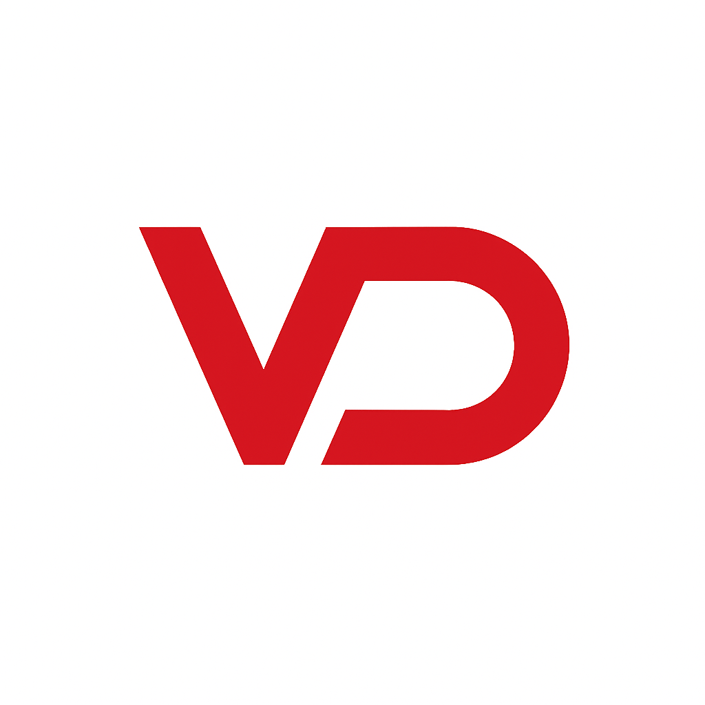

多供应商 LLM 接入
首方抽象层，覆盖 40+ 供应商——Anthropic/Claude、OpenAI、DeepSeek、Gemini、Mistral、Groq、xAI/Grok，以及本地 Ollama 作为后备——统一接口，具备重试、断路器和健康检查。

// AI原生软件工程
我们构建 AI 开发系统——模型、代理、编排和基础设施，将大语言模型转化为可靠的软件——并配以保持其诚实的治理层。
// 关于
Vasic Digital 是一家专注的工程实践，构建互联的 AI 开发产品族和可复用模块。工作不是单体，而是舰队：在数十个小型、独立测试、解耦的模块之上构建大型产品应用——因此经验证的部件在每个产品中复用，而不是重新构建。
核心语言是 Go，辅以 Kotlin 与 Kotlin Multiplatform、TypeScript/React、Python、Swift 和 Shell——根据任务选择。将舰队连结在一起的是机械化的纪律：每个项目继承作为 Git 子模块的共享工程宪法，每项产品宣传的能力必须由自动化、产出证据的测试支撑。特性不是在测试通过时“完成”，而是在真实用户能够实际使用并捕获证据证明时才算完成。
// 我们的业务
我们构建 AI 系统的基底——应用之下的硬核部分。
首方抽象层，覆盖 40+ 供应商——Anthropic/Claude、OpenAI、DeepSeek、Gemini、Mistral、Groq、xAI/Grok，以及本地 Ollama 作为后备——统一接口，具备重试、断路器和健康检查。
无头 CLI 编码代理控制平面、基于图的代理工作流、多轮“AI 辩论”共识以及 DAG/流水线运行时。
信任层，通过强制理解门（“你看到我的代码了吗？”）以及延迟、流式、函数调用、视觉和嵌入测试为模型打分——导出仅已验证的配置。
RAG、向量数据库、嵌入以及融合的代理记忆引擎（Mem0 + Cognee + Letta），具备无限上下文压缩。
护栏、PII 检测、对抗性红队夹具和输入规范化——安全内置于基底，而非后加。
// 第1层 — 旗舰
我们的旗舰系列覆盖完整的 AI 开发生命周期。按优先级顺序。
JIRA 的自由世界替代方案——Helix-Track 系列的旗舰产品。
一个集合式 LLM 服务，允许多个模型辩论并输出它们一致的答案。
分布式 AI 开发平台，将工作划分到通过 SSH 管理的工作节点，支持检查点/回滚。
单一二进制，六种模式：从笔记本到集群的 OpenAI 与 Anthropic 兼容推理，基于 HTTP/3。
面向 AI 计算的分布式操作系统，从数据中心 GPU 到边缘手持设备。
单一接口，43 家供应商——内置断路器、重试和健康检查。
每个无头 CLI 编码代理的统一控制平面。
验证。监控。优化。LLM 与供应商验证元数据的唯一真实来源。
AI 代理的统一记忆大脑——四大最佳引擎融合。
// 质量与治理 — 我们的差异化优势
两大支柱让整支舰队保持一致且可信。
一个通用、项目无关的工程规则册，以 Git 子模块形式发布，所有项目在 140+ 仓库舰队中继承。它编码不可协商的纪律——反欺诈证据门、误报免疫、数据与主机安全——项目可以扩展但绝不能削弱。一次子模块升级即全局升级规则，每个门都配有突变测试，证明门本身不为虚设。
反欺诈 QA 编排。它运行 YAML 测试库和全自动的 LLM 加计算机视觉 QA 会话，覆盖 Android、Android TV、Web 与 Desktop——且在未捕获运行时证据（截图、logcat、视频、堆栈跟踪）前不计为 PASS。"我们测试过它" 变为 "这里是视频、logcat 和工单"。
// 第2层 — 实用工具
具备产品级别的独立工具。
高级多协议、加密媒体收集管理——检测、编目并丰富您拥有的一切。
Markdown 输入，专业视频课程输出——AI 增强，多平台。
像用户一样查看 UI——计算机视觉加 LLM 视觉用于分析和导航。
将文档转化为可验证的特性映射，以实现 QA 自动化。
任何受跟踪的文档都不会不同步——内容哈希、双向、原子化。
每个警报都送达正确的目的地——无需命令语法。
您的任务板和真相源完美同步——双向同步。
一次构建，处处复用——一支由小型、解耦、独立测试的 Go 与 KMP 模块组成的舰队。
// 第3层 — 传统
我们的 DevOps 传统：声明式 JSON 转化为全配备、Docker 化的服务器。
像老板一样运行您的邮件服务器——用 JSON 描述，随处部署。
每个 Server Factory 背后的共享引擎。
QEMU 虚拟机镜像，像制品一样管理——下载、运行、网络、发布。
压缩、发布并在每台机器上复用您的 Parallels 虚拟机镜像。
// 技术
// 投资组合
Helix 系列、vasic-digital 实用工具以及 Server Factory 工具链的统一、基于证据的作品集。
// 联系
任何人都可以将应用接入 LLM。我们构建最难的部分：可验证、可复用且诚实的 AI 系统。我们不要求您相信绿色勾选——我们会展示背后的证据。
电子邮件
i@mvasic.ru
GitHub
github.com/vasic-digital